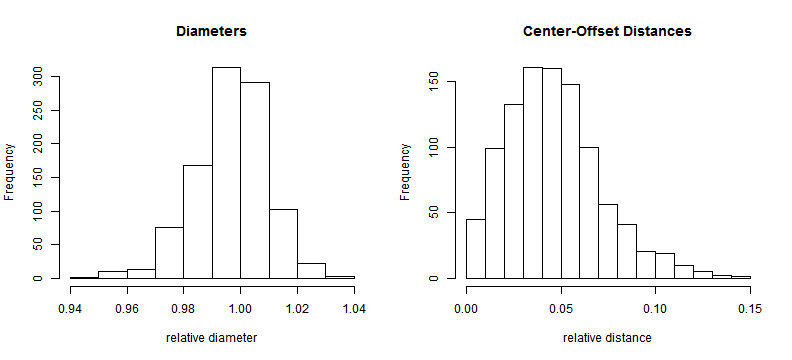

Equations for Estimation
Coordinates of center location:
\[\left(\hat{x}_c,\hat{y}_c\right) = \left(\frac{1}{n}\sum_{i=1}^{n}{x_i},\frac{1}{n}\sum_{i=1}^{n}{y_i}\right)\]
Disk Diameter:
\[\hat{d} = \frac{2}{n}\sum_{i=1}^{n}{\sqrt{\left(x_i-\hat{x}_c\right)^2
+\left(y_i-\hat{y}_c \right)^2} }\]
Center offset (true center \(\left(x_c,y_c\right)\)):
\[\hat{r}_c = \sqrt{\left(\hat{x}_c-x_c\right)^2
+\left(\hat{y}_c-y_c\right)^2} \]
Simulations (for 12 measurement points, 5% noise)
Statistics based 1000 bootstrap simulations; results as {expectation, stdev, bias, rmse}
- Rel. Diameter \(D/D_{true}:\) {0.944, 0.066, -0.056, 0.087}
- Rel. Offset \(r/D_{true}:\) {0.13, 0.067, 0.13, 0.146}
